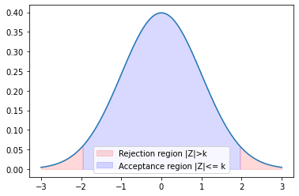
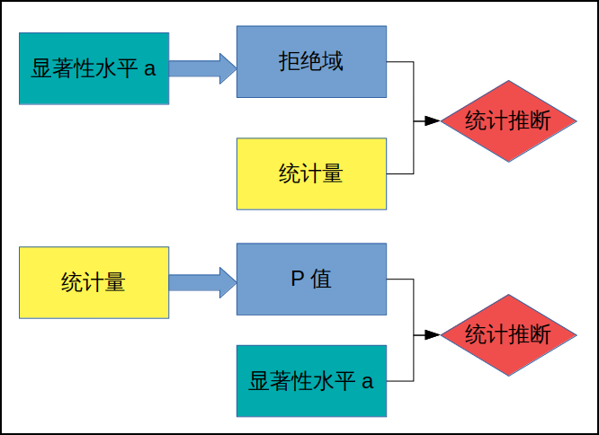
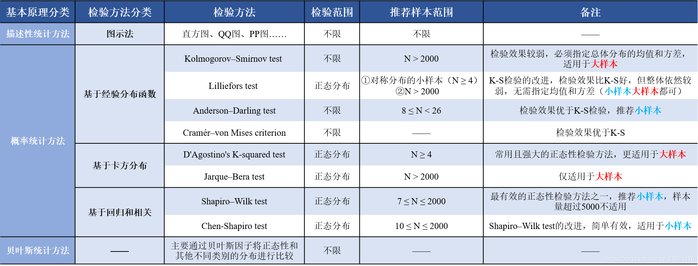
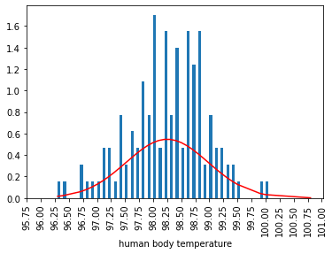
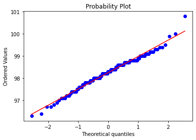
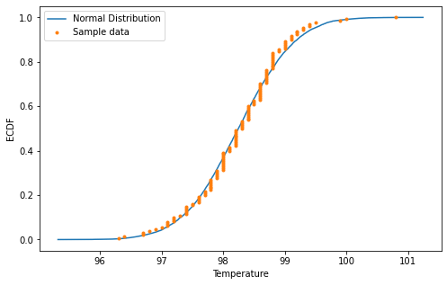

正文：4 应用篇
12 假设检验
12.1 假设检验的基本概念
12.1.1 假设检验的基本思想
根据实际情况的要求对检验对象提出一个假设(称为原假设), 同时提出一个与原假设对立的备设假设
: 检验统计量
: 区域
: 显著性水平
例 12.1
已知某炼铁厂的铁水含碳量, 现改变了工艺条件, 又测得 10 种贴水的平均含碳量, 假设方差无变化, 问总体均值是否有明显改变?
设
令事件得到不等式:
当为真, 拒绝
当为真, 拒绝
若 X 的样本观察值满足:
接受
拒绝(的拒绝域)
由得
, 认为接受原假设, 认为工艺是正常的
import numpy as np
from scipy.stats import norm
mu = 4.55
sigma = 0.06
X_bar = 4.57
n = 10
alpha = 0.05
Z_alpha_div_2 = norm.ppf(1 - alpha / 2)
Z = (X_bar - mu) / (sigma / np.sqrt(n))
Z, Z_alpha_div_2(1.054092553389484, 1.959963984540054)
import matplotlib.pyplot as plt
from scipy.stats import norm
import numpy as np
alpha = 0.05
plt.plot(np.linspace(-3, 3, 100), norm.pdf(np.linspace(-3, 3, 100))) # 绘制曲线
plt.fill_between(np.linspace(-3, norm.ppf(alpha / 2), 50),
norm.pdf(np.linspace(-3, norm.ppf(alpha / 2), 50)),
alpha=.15, color="red", label="Rejection region |Z|>k")
plt.fill_between(np.linspace(norm.ppf(1 - alpha / 2), 3, 50),
norm.pdf(np.linspace(norm.ppf(1 - alpha / 2), 3, 50)),
alpha=.15, color="red")
plt.fill_between(np.linspace(norm.ppf(alpha / 2), norm.ppf(1 - alpha / 2), 50),
norm.pdf(np.linspace(norm.ppf(alpha / 2), norm.ppf(1 - alpha / 2), 50)),
alpha=.15, color="blue", label="Acceptance region |Z|<= k")
plt.legend()
plt.show() # 显示图片{kind=link}

12.1.2 左右侧检验与双侧检验
-
左侧检验: 或, 拒绝域:
-
右侧检验: 或, 拒绝域:
-
双侧检验: , 拒绝域:
12.1.3 P 值检验法
以上为临界值检验法，下面介绍 P 值检验法，所谓 P 值检验法就是由检验统计量的样本观察值得出的原假设可被拒绝的最小显著性水水平。
{kind=link}

例 12.3
某食品厂用自动装罐机装罐头食品, 每罐的标准重量
设罐重是服从正态分布的随机变量, 标准差
从中抽取罐, 测得平均重量为
隔一段时间后又抽罐, 测的平均重量为
问这时机器工作是否正常?
提出假设
取
接受原假设, 第二次抽样支持原假设的强度更大
12.2 Z 检验(正态总体均值的假设检验, 方差已知时)
当真实时
若两组样本方差和已知, 统计量的计算公式:
12.3 t 检验(正态总体均值的假设检验, 方差未知时)
由于总体方差未知, 用样本标准差代替检验法中的总体标准差
若有两种独立样本, 选取统计量
其中
12.4 卡方检验
未知总体的分布的假设检验(非参数检验)拟合检验法
其基本思想是用得到的样本观察值来与假设的总体的分布函数(或分布律)来进行某种拟合, 再根据拟合的程度确定是否接受原假设, 从而推断总体是否服从假设的分布.
设总体的分布函数未知, 是来自总体的一个样本, 建立假设检验
, 其中是已知的分布函数
皮尔逊定理
若充分大(一般), 则当为真时, 无论总体 X 服从何种分布
统计量都近似服从,是分布中未知参数的个数
例 12.12
某市自开办有奖储蓄以来, 13 期兑奖中各数码的频数汇总如下表所示
| 数码 | 0 1 2 3 4 5 6 7 8 9 | 总数 |
|---|---|---|
| 频数 | 21 28 37 36 31 45 30 37 33 52 | 350 |
如果检验器械或操作方法没有问题, 则各数码服从均匀分布, 提出检验假设理论频数,
统计量
而拒绝, 认为器械操作方法有问题
12.5 假设检验中的两类错误
| 决策结果\实际情况 | 为真 | 为假 |
|---|---|---|
| 拒绝 | 弃真(第一类错误) | 取伪(无错) |
| 接受 | 存真(无错) | 取伪(第二类错误) |
在假设检验中, 通常是要求犯第一类错误的概率不超过预定的数(如 0.05, 0.01 等), 同时希望犯第二类错误的概率尽可能小
12.6 综合实例 1——体检数据中的假设检验问题
| 变量名 | 描述 |
|---|---|
| Temperature | 体温(华氏温度) |
| Gender | 性别(1 为男, 2 为女) |
| Heart Rate | 心率(每分钟心跳次数) |
(1)显示数据集及相关统计描述信息(均值, 标准差等)
import pandas as pd
import pylab
import math
import numpy as np
import matplotlib.pyplot as plt
import numpy as np
from scipy.stats import norm
import scipy.stats
import warnings
warnings.filterwarnings('ignore')
df = pd.read_csv('normtemp.txt', sep=' ', names=['Temperature', 'Gender', 'Heart Rate'])
df.describe()| Temperature | Gender | Heart Rate | |
|---|---|---|---|
| count | 130.000000 | 130.000000 | 130.000000 |
| mean | 98.249231 | 1.500000 | 73.761538 |
| std | 0.733183 | 0.501934 | 7.062077 |
| min | 96.300000 | 1.000000 | 57.000000 |
| 25% | 97.800000 | 1.000000 | 69.000000 |
| 50% | 98.300000 | 1.500000 | 74.000000 |
| 75% | 98.700000 | 2.000000 | 79.000000 |
| max | 100.800000 | 2.000000 | 89.000000 |
分别显示了各属性的总数, 均值, 标准差, 最大值和最小值, 以及各种分位点值
df.head()| Temperature | Gender | Heart Rate | |
|---|---|---|---|
| 0 | 96.3 | 1 | 70 |
| 1 | 96.7 | 1 | 71 |
| 2 | 96.9 | 1 | 74 |
| 3 | 97.0 | 1 | 80 |
| 4 | 97.1 | 1 | 73 |
(2) 试检验体温的分布是否服从正态分布
这里用的跟之前书上讲的根本就不是一个方法...
正态检验 (Normality Test)——常见方法汇总与简述
{kind=link}

有多种手段评估数据是否正态分布。分两大类：图形和统计量。图形手段包括 q-q plot 和 p-p plot，统计量手段包括 Kolmogorov-Smirnov 检验 and Shapiro-Wilks 检验。
Samuel Shapiro 和 MartinWilk 于 1965 年提出了 Shapiro–Wilk 检验。他们观察到 Normal probability plot 与线性回归很类似。Normalprobability plot 是 q-q plot 的特例，检查样本数据集是否匹配某正态分布，比如标准正态分布 N(0,1)。
1.直方图初判
observed_temperatures = df['Temperature'].sort_values()
bin_val = np.arange(start= observed_temperatures.min(), stop= observed_temperatures.max(), step = .05)
mu, std = np.mean(observed_temperatures), np.std(observed_temperatures)
p = norm.pdf(observed_temperatures, mu, std)
plt.hist(observed_temperatures,bins = bin_val, density=True, stacked=True)
plt.plot(observed_temperatures, p, color = 'red')
plt.xticks(np.arange(95.75,101.25,0.25),rotation=90)
plt.xlabel('Human Body Temperature Distributions')
plt.xlabel('human body temperature')
plt.show()
print('Average (Mu): '+ str(mu) + ' / ' 'Standard Deviation: '+str(std)){kind=link}

Average (Mu): 98.24923076923076 / Standard Deviation: 0.7303577789050376
2.利用 Scipy 工具检验正态性
# Shapiro-Wilk Test: https://en.wikipedia.org/wiki/Shapiro%E2%80%93Wilk_test
"""
语法:scipy.stats.shapiro(x, a=None, reta=False)
x 为待检验的数据
返回(统计数, P 值)
"""
shapiro_test, shapiro_p = scipy.stats.shapiro(observed_temperatures)
print("Shapiro-Wilk Stat:",shapiro_test, "\nShapiro-Wilk p-Value:", shapiro_p)
"""
语法 scipy.stats.normaltest(a, axis=0, nan_policy='propagate')
a 是待检验数据
axis 正态分布测试将沿其计算的轴
返回：(对数据集进行假设检验的 k2 值, P 值)
"""
k2, p = scipy.stats.normaltest(observed_temperatures)
print('p:',p)Shapiro-Wilk Stat: 0.9865769743919373
Shapiro-Wilk p-Value: 0.2331680953502655
p: 0.2587479863488212
3.通过分位数-分位数(Q-Q)图检查正态分布
# stats.probplot(QQ 图)
scipy.stats.probplot(observed_temperatures, dist="norm", plot=pylab)
pylab.show(){kind=link}

4.基于 ECDF(经验累积分布函数)正态检验
根据当前样本的均值和标准差随机生成一个新的正态分布, 然后将它的累积分布函数和样本数据的累积分布函数比较, 如果实测差异足够大, 该检验将拒绝总体呈正态分布的原假设
def ecdf(data):
"""Compute ECDF"""
n = len(data)
x = np.sort(data)
y = np.arange(1, n+1) / n
return x, y
# Compute empirical mean and standard deviation 计算经验平均值和标准差
# Number of samples
n = len(df['Temperature'])
# Sample mean 样本均值
mu = np.mean(df['Temperature'])
# Sample standard deviation 样本方差
std = np.std(df['Temperature'])
print('Mean temperature: ', mu, 'with standard deviation of +/-', std)
# Random sampling of the data based off of the mean of the data.
# 根据数据的平均值对数据进行随机抽样。
normalized_sample = np.random.normal(mu, std, size=10000)
x_temperature, y_temperature = ecdf(df['Temperature'])
normalized_x, normalized_y = ecdf(normalized_sample)
# Plot the ECDFs
fig = plt.figure(figsize=(8, 5))
plt.plot(normalized_x, normalized_y)
plt.plot(x_temperature, y_temperature, marker='.', linestyle='none')
plt.ylabel('ECDF')
plt.xlabel('Temperature')
plt.legend(('Normal Distribution', 'Sample data'))Mean temperature: 98.24923076923076 with standard deviation of +/- 0.730357778905038
<matplotlib.legend.Legend at 0x1bc43440b20>
{kind=link}

3 有学者提出 98.6°F(37°C)是人类的平均气温, 我们是否接受该观点?
from scipy import stats
CW_mu = 98.6
# 计算单独样本 t 检验
stats.ttest_1samp(df['Temperature'], CW_mu, axis=0)Ttest_1sampResult(statistic=-5.454823292364077, pvalue=2.410632041561008e-07)
, 拒绝原假设
4 男性和女性的体温有明显的差异吗?
female_temp = df.Temperature[df.Gender == 2]
male_temp = df.Temperature[df.Gender == 1]
# 当不确定两总体方差是否相等时, 应先利用 levene 检验, 检验两总体是否具有方差齐性
rvs1 = stats.norm.rvs(female_temp)
rvs2 = stats.norm.rvs(male_temp)
print(stats.levene(rvs1, rvs2))
mean_female_temp = np.mean(female_temp)
mean_male_temp = np.mean(male_temp)
print('Average female body temperature = ' + str(mean_female_temp))
print('Average male body temperature = ' + str(mean_male_temp))
# Compute independent t-test
"""
计算两个独立分数样本的平均值的 T-test。
这是对 2 个独立样本具有相同平均(预期)值的零假设的检验。此测试假定默认情况下总体具有相同的方差。
"""
print(stats.ttest_ind(female_temp, male_temp, axis=0))LeveneResult(statistic=2.1897731829800553, pvalue=0.14138681028945846)
Average female body temperature = 98.39384615384616
Average male body temperature = 98.1046153846154
Ttest_indResult(statistic=2.2854345381654984, pvalue=0.02393188312240236)
LeveneResult 每次都不尽相同, 但是的值都远大于 0.05, 认为两总体具有方差齐性
Ttest_indResult 的小于显著性水平 0.05, 有超过 95%的把握认为两者是有差异的
12.7 综合实例 2——种族对求职是否有影响
import pandas as pd
import numpy as np
from scipy import stats
data = pd.io.stata.read_stata('us_job_market_discrimination.dta')
data.head()| id | ad | education | ofjobs | yearsexp | honors | volunteer | military | empholes | occupspecific | ... | compreq | orgreq | manuf | transcom | bankreal | trade | busservice | othservice | missind | ownership | |
|---|---|---|---|---|---|---|---|---|---|---|---|---|---|---|---|---|---|---|---|---|---|
| 0 | b | 1 | 4 | 2 | 6 | 0 | 0 | 0 | 1 | 17 | ... | 1.0 | 0.0 | 1.0 | 0.0 | 0.0 | 0.0 | 0.0 | 0.0 | 0.0 | |
| 1 | b | 1 | 3 | 3 | 6 | 0 | 1 | 1 | 0 | 316 | ... | 1.0 | 0.0 | 1.0 | 0.0 | 0.0 | 0.0 | 0.0 | 0.0 | 0.0 | |
| 2 | b | 1 | 4 | 1 | 6 | 0 | 0 | 0 | 0 | 19 | ... | 1.0 | 0.0 | 1.0 | 0.0 | 0.0 | 0.0 | 0.0 | 0.0 | 0.0 | |
| 3 | b | 1 | 3 | 4 | 6 | 0 | 1 | 0 | 1 | 313 | ... | 1.0 | 0.0 | 1.0 | 0.0 | 0.0 | 0.0 | 0.0 | 0.0 | 0.0 | |
| 4 | b | 1 | 3 | 3 | 22 | 0 | 0 | 0 | 0 | 313 | ... | 1.0 | 1.0 | 0.0 | 0.0 | 0.0 | 0.0 | 0.0 | 1.0 | 0.0 | Nonprofit |
5 rows × 65 columns
blacks = data[data.race == 'b']
whites = data[data.race == 'w']
blacks.call.describe()count 2435.000000
mean 0.064476
std 0.245649
min 0.000000
25% 0.000000
50% 0.000000
75% 0.000000
max 1.000000
Name: call, dtype: float64
whites.call.describe()count 2435.000000
mean 0.096509
std 0.295346
min 0.000000
25% 0.000000
50% 0.000000
75% 0.000000
max 1.000000
Name: call, dtype: float64
黑人录取率 6.4%, 白人录取率 9.7%
blacks_called = len(blacks[blacks['call'] == True])
blacks_not_called = len(blacks[blacks['call'] == False])
whites_called = len(whites[whites['call'] == True])
whites_not_called = len(whites[whites['call'] == False])
observed = pd.DataFrame({'blacks': {'called': blacks_called, 'not_called': blacks_not_called},
'whites': {'called' : whites_called, 'not_called' : whites_not_called}})
observed| blacks | whites | |
|---|---|---|
| called | 157 | 235 |
| not_called | 2278 | 2200 |
# 统计获得职位和未获得职位的人数
num_called_back = blacks_called + whites_called
num_not_called = blacks_not_called + whites_not_called
# 得到获得职位的理论比率
rate_of_callbacks = num_called_back / (num_not_called + num_called_back)
# 获得职位和未获得职位的理论值
expected_called = len(data) * rate_of_callbacks
expected_not_called = len(data) * (1 - rate_of_callbacks)
# 理论值四格表(黑人和白人的录取率相等)
expected = pd.DataFrame({'blacks':{'called': expected_called / 2, 'not_called': expected_not_called / 2},
'whites': {'called': expected_called / 2, 'not_called': expected_not_called / 2}})
expected| blacks | whites | |
|---|---|---|
| called | 196.0 | 196.0 |
| not_called | 2239.0 | 2239.0 |
import scipy.stats as stats
observed_frequencies = [blacks_not_called, whites_not_called, whites_called, blacks_called]
expected_frequencies = [expected_not_called / 2, expected_not_called / 2, expected_called / 2, expected_called / 2]
# 卡方检验
stats.chisquare(f_obs=observed_frequencies, f_exp=expected_frequencies)Power_divergenceResult(statistic=16.87905041427022, pvalue=0.0007483959441097264)
, 认为求职路上种族歧视是存在的
12.9 习题
1 t 检验
在 10 块土地上同时种植甲, 乙两种作物, 其产量服从正态分布, 并且方差相同.
计算结果得, 试问这两种作物的产量有无明显差异?
import numpy as np
from scipy import stats
mean1 = 30.97
mean2 = 21.79
std1 = 26.7
std2 = 12.1
nobs1 = 10
nobs2 = 10
modified_std1 = np.sqrt(np.float32(nobs1) / np.float32(nobs1-1)) * std1
modified_std2 = np.sqrt(np.float32(nobs2) / np.float32(nobs2-1)) * std2
(statistic, pvalue) = stats.ttest_ind_from_stats(mean1=mean1, std1=modified_std1, nobs1=10, mean2=mean2, std2=modified_std2, nobs2=10)
print("t statistic is: ", statistic)
print("pvalue is: ", pvalue)t statistic is: 0.9394886573346275
pvalue is: 0.35991721678518696
, 没有显著差异
2 卡方检验
从某中学随机抽取两个班, 判断这两个班对待文理分科的态度是否有显著差异()?
卡方检验（两个类别变量是否独立）以及 chi2_contingency
| 赞成 | 反对 | ||
|---|---|---|---|
| 甲班 | 37 | 27 | 64 |
| 乙班 | 39 | 21 | 60 |
| 76 | 48 | 124 |
自由度=(行数-1)(列数-1)=1
(不知道这么算对不对..)
所以没有显著差异
from scipy.stats import chi2_contingency
import numpy as np
kf_data = np.array([[37,27], [39,21]])
kf = chi2_contingency(kf_data)
print('chisq-statistic=%.4f, p-value=%.4f, df=%i expected_frep=%s' % kf)chisq-statistic=0.4054, p-value=0.5243, df=1 expected_frep=[[39.22580645 24.77419355]
[36.77419355 23.22580645]]
, 所以没有显著差异